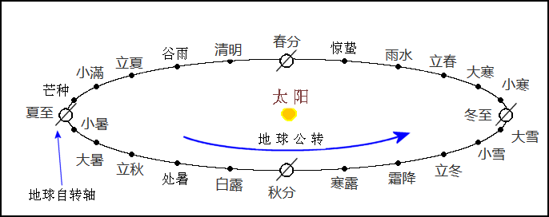

初稿: 2018年10月 最近一次重大修订: 2019年4月
从地球上看，太阳相对于恒星的位置不断向东移动，一年行一周。太阳在天球上的运动轨迹是一个大圆，称为黄道，黄道其实是地球公转轨道投射在天球上的大圆。在古代，太阳在黄道上的位置是用圭表测量正午时日影的长度而定。这里正午是指太阳位于正南方位的时刻(假设观测站位于北回归线以北)。正午日影最长的一日称为冬至。从冬至到下一个冬至的时间称为一「岁」，而从农历正月初一到下一年正月初一的时间称为一「年」。现在除了提及年龄外，很少会用岁说时间，而年则一般指公历的一年。
从冬至起，可将黄道等分二十四段，二十四段的边界有二十四点。二十四节气就是太阳通过这二十四点的时刻。我们知道太阳在天球上的视运动是因为地球绕太阳公转的缘故。如下图所示，可以设想二十四节气是地球通过其公转轨道二十四个点的时刻。地球的自转轴并不与其公转轨道垂直，这就是季节的成因，也是正午时日影长度变化的原因。

用现代天文学的术语来说，二十四节气是太阳的地心视黄经λs 是15°的整数倍的时刻。下表列出二十四节气的名称、太阳的地心视黄经和公历的近似日期。
| 节气 | 太阳地心视黄经 | 近似公历日期 |
|---|---|---|
| 立春 (正月节) | 315° | 2月4日 |
| 雨水 (正月中) | 330° | 2月19日 |
| 惊蛰 (二月节) | 345° | 3月6日 |
| 春分 (二月中) | 0° | 3月21日 |
| 清明 (三月节) | 15° | 4月5日 |
| 谷雨 (三月中) | 30° | 4月20日 |
| 立夏 (四月节) | 45° | 5月6日 |
| 小满 (四月中) | 60° | 5月21日 |
| 芒种 (五月节) | 75° | 6月6日 |
| 夏至 (五月中) | 90° | 6月22日 |
| 小暑 (六月节) | 105° | 7月7日 |
| 大暑 (六月中) | 120° | 7月23日 |
| 立秋 (七月节) | 135° | 8月8日 |
| 处暑 (七月中) | 150° | 8月23日 |
| 白露 (八月节) | 165° | 9月8日 |
| 秋分 (八月中) | 180° | 9月23日 |
| 寒露 (九月节) | 195° | 10月8日 |
| 霜降 (九月中) | 210° | 10月23日 |
| 立冬 (十月节) | 225° | 11月7日 |
| 小雪 (十月中) | 240° | 11月22日 |
| 大雪 (十一月节) | 255° | 12月7日 |
| 冬至 (十一月中) | 270° | 12月22日 |
| 小寒 (十二月节) | 285° | 1月6日 |
| 大寒 (十二月中) | 300° | 1月20日 |
由立春算起，单数的节气称为「节气」(即 立春、惊蛰、清明、立夏、芒种、小暑、立秋、白露、寒露、立冬、大雪、小寒)，双数的节气称为「中气」(即 雨水、春分、谷雨、小满、夏至、大暑、处暑、秋分、霜降、小雪、冬至、大寒)。表中三月中(气)、四月节(气)等是二十四节气的别名，为明朝和清朝钦天监编的官方历书所采用(见存世明清历书，例如明嘉靖三年大统历、清康熙九年时宪历等)。注意正月节并不一定出现在正月、二月节也不一定在二月等。但除了少数例外，正月中一般在正月、二月中一般在二月等;而现代农历法则規定十一月中(冬至)必定在十一月。
为了方便记忆二十四节气，有人把二十四节气顺序每节气各取一字编成以下歌诀:
春雨惊春清谷天
夏满芒夏暑相连
秋处露秋寒霜降
冬雪雪冬小大寒
二十四节气根据太阳在黄道的位置而定，属阳历。公历也是阳历，所以节气的公历日期每年只有一两日变动。以往的日历一般列出二十四节气的农历日期，所以不少人以为二十四节气属于阴历或阴阳历，其实不然。鉴于二十四节气的公历日期基本不变，有人把上面二十四节气歌诀加上以下三句:
最多相差一两天
上半年来六廿一
下半年来八廿三
上半年是指公历1月到6月，下半年指公历7月到12月。六、廿一、八、廿三也是指公历的日期。
二十四节气在农历中有重要作用，农历是阴阳历，既考虑月亮盈亏变化也顾及季节交替。为使农历月份不偏离季节交替的周期，农历每三年左右要设一个闰月，闰月的安插是由中气决定，详情可参阅农历编算法则网页。
最早的完整二十四节气名称见于汉初的《淮南子‧天文训》，名称和次序和今天的完全一样。《汉书‧律历志》也记有二十四节气，但是头六个节气次序与《淮南子‧天文训》稍有不同:惊蛰在雨水之前、谷雨在清明之前，即立春、惊蛰、雨水、春分、谷雨、清明……。汉以后的历朝二十四节气名称和次序有时略有改动，例如唐朝麟德历将雨水和惊蛰次序颠倒，称「惊蛰」为「启蛰」，次序是立春、启蛰、雨水、春分、清明…… (见《旧唐书‧历志》或《新唐书‧历志》);明郑颁行的大统历书将「驚蟄」和「穀雨」简写成「京直」和「谷雨」(见永历二十五年大统历、永历三十年大统历或永历三十一年大统历)。
本网站的二十四节气名称和顺序一律依照《淮南子‧天文训》。
上述二十四节气以太阳走到黄道二十四个定点的时刻来定义，称为「定气」。顺治二年(1645年)历法改革前，二十四节气的计算是把回归年平分二十四段，每一段时刻就是一个节气时刻，用这种方法来定义的二十四节气称为「平气」。
根据平气法，两中气相隔的时间是回归年的十二分之一，即30.44日。农历规定每月初一必定发生在朔日。所以即使有一个中气(用平气法来定)发生在初一零时，下一个中气也要在三十日后，农历一个月最多只能有三十日，所以下一个中气必然发生在下一个月，由此可推出一个月最多只能含有一个中气。顺治历改前的农历月序由中气决定:含雨水的月份定为正月、含春分的月份定为二月、含谷雨的月份定为三月等等。如果有农历月不含中气，该月就定为闰月。这置闰法则就是著名的「无中气置闰法」。
顺治历改后，二十四节气用定气来定义，这使上述月序和无中气置闰法则失效，因为一个月有可能含两个中气，而一岁内可能有一个以上的无中气月。由定气法所定义的二十四节气时间间隔并不相等，这是由于地球公转轨道是椭圆的，当地球接近太阳时运行比较快，两节气的时间间隔也比较短，当地球离太阳远时运行比较慢，两节气的时间间隔也比较长。两中气的时间间隔最短是29.44日，最长是31.44日。由于有两中气的时间间隔短于三十日，一个月有可能出现两个中气。顺治历改后，农历月的数序及置闰法则由一套较为复杂的法则来定，详情可参阅本网站的农历法则网页。不过，一个月内含两个中气的情况很罕见，一百年只会出现两三次。所以在大多数的情况下，含雨水的月份是正月、含春分的月份是二月、含谷雨的月份是三月等等。
平气的二十四节气时刻计算很简单，只要知道某一节气的时刻，其他节气的时刻只须加上(回归年时间/24)的整数倍。然而中国历代历法修改频繁，每次改历都会修改节气时刻以符合当时的观测数据，而且各历法采用的岁实(即回归年)都稍有不同。中国历代的平气时刻或可用分段线性函数表示。